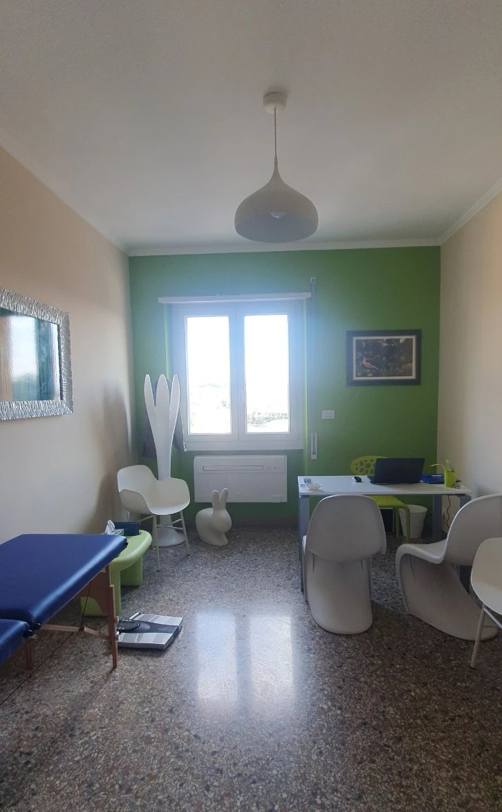
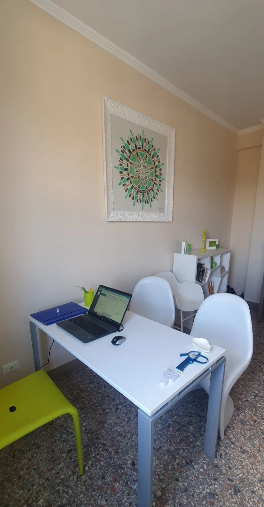

Biologo nutrizionista · Chinesiologo
Il cibo è un piacere,piacere,alleato,amico,
non un nemico.
Piani alimentari personalizzati e sostenibili, senza strategie drastiche, per la salute, lo sport e tutta la famiglia.
Vero o falso? Pesa le risposte.
Scegli un tema: tre frasi che si sentono spesso a tavola. Rispondi d'istinto, poi scopri come stanno davvero le cose.
Consigli generali: ogni situazione è diversa. Hai un dubbio? Scrivimi.
Per dimagrire bisogna eliminare i carboidrati. I carboidrati fanno parte di un'alimentazione equilibrata. Contano quantità, qualità e come si distribuiscono nella giornata.
Saltare la cena aiuta a perdere peso. Saltare i pasti spesso porta a mangiare di più dopo. Meglio pasti regolari e bilanciati.
Uno sgarro ogni tanto fa parte di una dieta sostenibile. Un piano che non lascia spazio al piacere è difficile da mantenere. L'equilibrio passa anche dagli strappi alla regola.
Più proteine prendo, più muscoli faccio. Le proteine sono importanti, ma oltre una certa quota non aumentano la massa muscolare. Conta il piano complessivo, insieme all'allenamento.
Quello che mangi prima e dopo l'allenamento conta. I tempi dei pasti e la scelta degli alimenti influenzano energia, prestazione e recupero.
Il peso sulla bilancia dice tutto sulla forma fisica. Due persone con lo stesso peso possono avere composizioni corporee molto diverse: massa magra e massa grassa raccontano molto di più.
Se un bambino rifiuta una verdura, non la mangerà mai. Spesso servono più assaggi, proposti con calma e senza forzare, perché un alimento nuovo venga accettato.
I bambini imparano a mangiare guardando gli adulti. L'esempio a tavola conta: le abitudini della famiglia diventano le loro.
Un succo di frutta vale quanto un frutto. Il succo ha meno fibre e zuccheri più concentrati: la frutta intera resta un'altra cosa.
Buone abitudini, non rinunce.
Sono Marco Carfagna, biologo nutrizionista e chinesiologo. Da anni mi dedico con passione alla promozione di corretti stili di vita, attraverso buone abitudini alimentari e una giusta attività fisica, per la prevenzione e la cura delle principali malattie metaboliche.
Mi occupo anche di nutrizione per sportivi che vogliono migliorare la performance e la composizione corporea, e di educazione alimentare per chiunque desideri mangiare meglio.
Il mio lavoro si fonda su un modello di dieta sostenibile: un piano alimentare personalizzato, mirato ai tuoi obiettivi e rispettoso delle tue preferenze.
Raccontami i tuoi obiettivi.
Prenota una visita“Alla tentazione bisogna cedere e non resistere.”Marco Carfagna
Il mio approccio si riassume in una parola: equilibrio. Un piano alimentare deve essere prima di tutto sostenibile, quindi niente strategie drastiche o estreme. Il cibo va vissuto come un piacere, non come un nemico.
Un piano diverso per ogni obiettivo.
Apri un gruppo per vedere come posso aiutarti. In studio o con una consulenza online.
Non trovi il tuo caso?
ChiedimiPeso e benessereEducazione alimentare+
- Sovrappeso e obesità
- Dieta sostenibile, senza strategie estreme
- Rapporto sereno con il cibo
- Educazione alimentare per chi vuole mangiare meglio
PatologiePrevenzione e cura metabolica+
- Diabete e diabete mellito
- Celiachia
- Costipazione
- Prevenzione delle principali malattie metaboliche
SportNutrizione per sportivi+
- Migliorare la performance
- Composizione corporea
- Alimentazione prima e dopo l'allenamento
- Attività fisica adatta a te, da chinesiologo
Bambini e famigliaDai 5 anni, in alcune sedi+
- Educazione alimentare per i più piccoli
- Abitudini sane per tutta la famiglia
- Difficoltà a tavola e gusti selettivi
Tre porzioni, un piano su misura.
- 1
Ci conosciamo
Parliamo di abitudini, gusti, ritmi di vita e obiettivi, insieme a eventuali esami recenti.
- 2
Misuriamo
Valutiamo la composizione corporea e le misure, per partire da dati concreti e non solo dal peso.
- 3
Il tuo piano
Ricevi un piano alimentare personalizzato, che rispetta le tue preferenze. Poi ci rivediamo per i controlli.
La prima visita è il punto di partenza.
Prenota una visita

Un ambiente luminoso e accogliente.
Spazi semplici e curati, pensati per sentirsi a proprio agio e parlare con calma di alimentazione e obiettivi. Ricevo in quattro sedi tra Roma, Tivoli e Guidonia, e anche online.
- Ingresso accessibile (Guidonia)
- LGBTQ+ friendly
- Consulenze online
Mi sono trovata benissimo, il dottor Carfagna è estremamente professionale: disponibile e attento alle mie esigenze.
Il Dott Carfagna è molto preparato e fornisce accurate spiegazioni .Mi sono trovata benissimo nella comunicazione e il piano alimentare suggerito è facile da seguire ed efficace. Ottimo, lo consiglio vivamente
L' efficacia. Una dieta su misura per me che ha dato i suoi risultati. Attenzione e gentilezza
Prima della prima visita.
Dovrò rinunciare ai cibi che amo?
No. Il piano è costruito sulle tue preferenze e lascia spazio anche al piacere: una dieta sostenibile è quella che riesci a seguire nel tempo.
Cosa porto alla prima visita?
Se li hai, gli esami del sangue recenti ed eventuali referti. Per il resto basta la voglia di raccontarmi le tue abitudini e i tuoi obiettivi.
Fai anche consulenze online?
Sì, oltre alle visite in studio è possibile fare una consulenza online.
Visiti anche i bambini?
Sì, dai 5 anni, solo in alcune sedi. Scrivimi e ti dico dove è possibile.
Come prenoto?
Scrivimi su WhatsApp o chiamami al 346 224 6872. Puoi anche prenotare online su MioDottore.
Il cibo è un piacere,
non un nemico.
Scrivimi quando vuoi: costruiamo insieme un piano che ti faccia stare bene, senza rinunce inutili.
Prenota una visita →Quattro studi, scegli il più comodo.
Eidos
Viale Roma 52, 00012 Guidonia Montecelio
Questo sito può essere il tuo.
Lo hai appena visto: lo mettiamo online con il tuo nome, sistemando insieme testi, foto e dettagli.
- Il sito completo che hai appena visto, con le tue modifiche
- Pubblicazione online e anteprima per WhatsApp
- Pagina privacy già pronta
pagamento unico
Offerta valida 14 giorni dalla prima visione
Scrivici per maggiori infoo chiama Pier al 331 468 3568